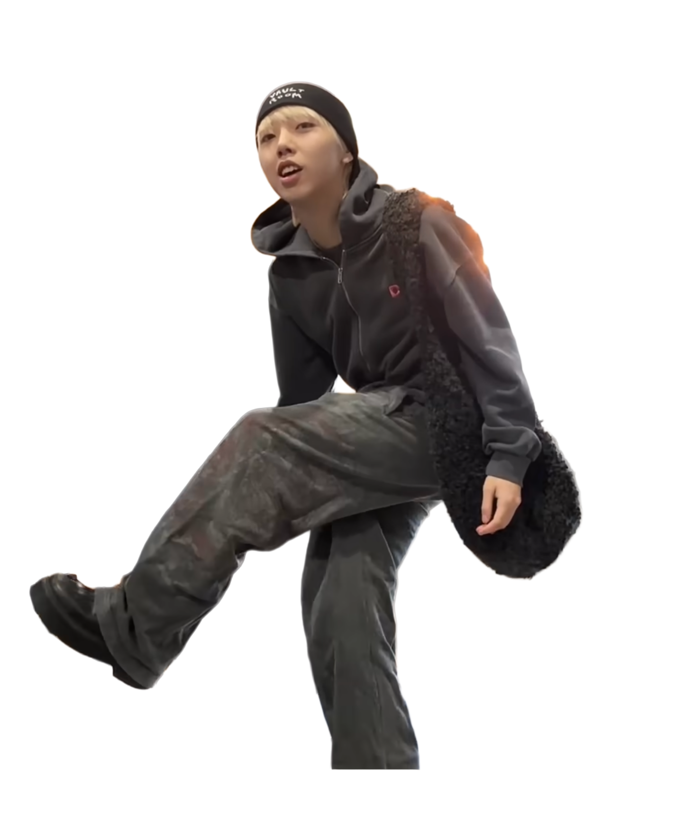

GON NO ASA GOHAN CHANNEL.
GON NO ASA GOHAN CHANNEL.
GON NO ASA GOHAN CHANNEL.
GON NO ASA GOHAN CHANNEL.
GON
東京都世田谷区生まれ
|
2002年11月15日 (23歳)
おすすめ動画
GON'S GIFT SHOP
TODAY'S OUTFIT
「俺は起きて歯医者に遅刻するほど落ちぶれてないぞコーデ」

Palace Skateboards
BEANIE
Boiler Room × Umbro
HOODY
vaultroom × BLUELOCK
RADER TEE
土井さんに買ってもらっためちゃくちゃいいブーツ
SHOES
引きずって歩きまくってるデニムみたいなやつ
BOTTOMS